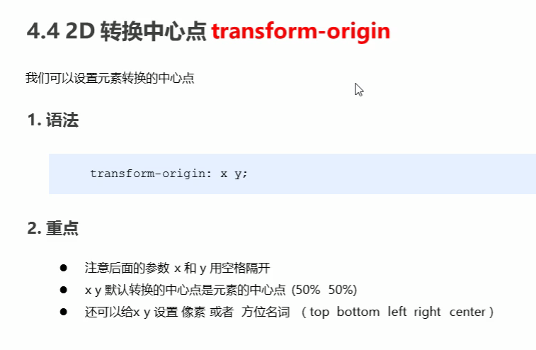

<!-- transform(2D转换)，都不会影响其他元素:

    4种常用值，因为都是函数，要带（）用，隔开：
        translate(位置，2种单位：px和百分比，)/scale(缩放倍数，不带单位)/rotate(旋转多少度，单位deg，规定只有一个参数)/skew(倾斜，用,隔开，单位deg，两个参数，也可以写一个参数，第二个默认为0)
    1种属性：transform-origin: x y;(改变元素的中心点，精确单位，百分比，方位名词，用空格隔开)
    
    
        1.移动位置,对行内元素没有效果，不影响其他元素的位置，百分比是参考元素自身大小来移动相应的位置，可以取负值。
            transform:translate(x,y带单位或写百分比); 参数用，隔开。
            transform:translateX(n); X轴的X一定要大写
            transform:translateY(n); Y轴的Y一定要大写

        2.transform:scale(x,y); (倍数,不带单位)1是自身大小，1以上的值是放大，1以下的值是缩小,取负值会把元素翻转后再进行缩放，如果值是0，元素会消失，都以元素中心点为基点。
            transform: scale(1,1); 默认值，自身大小，没缩没放
            transform: scale(2,1); x放大2倍,y没变
            transform: scale(2); 等于xy轴一样，等比放大
            transform: scale(-0.5); 翻转元素后缩小元素自身的一半
        
        3. 旋转，只有一个值，正数是顺时针，负数是逆时针，不会改变元素的形状,默认以中心点旋转，想要改变旋转的基点，用origin设置。
            transform: rotate(0deg); 回原位
            transform: rotate(数字deg); 顺时针
            transform: rotate(—数字deg); 逆时针
            
        4.倾斜，单位是deg，用,隔开，让元素倾斜显示,会改变元素的形状。它可以将一个对象以其中心位置围绕着X轴和Y轴按照一定的角度倾斜。
            transform: skew(数字deg); 一个值是x的，y的就默认为0
            transform: skew(xdeg,ydg);
                
        5. 设置中心点的位置，用空格隔开。
            transform-origin: 50% 50%; 默认值
            transform-origin: 数字px 数字px;
            transform-origin: left top;
综合写法：transform:translate() rotate() scale() ...等等
        有顺序要求。
        当有translate()属性时，一定要放到最前面写，否则会影响效果。
        例如：先旋转再移动，坐标轴会朝相反方向跑偏
-->


